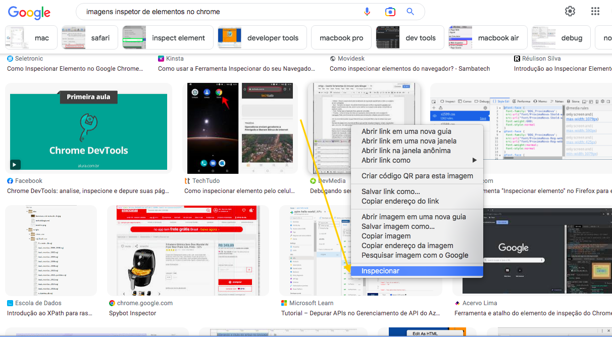

Esta página é um exercício/ desafio do curso conduzido pelo Prof. Diogo Medeiros Mainardes
Desenvolvedor Sênior / Tech Lead @diogomainardes.dev
Realizado na plataforma DIO - Digital Inovation One
Está sendo uma excelente oportunidade para rever conteúdos que já vi em outros cursos na DIO, mas que me acendeu a esperança de poder dizer que ao término dessa formação, domino essa linguagem de marcaçao de texto tão essencial para uma carreira de programação.
"Faça coisas. Seja curioso, persistente. Não espere por um empurrão da inspiração ou por um beijo da sociedade na sua testa. Preste atenção. É tudo sobre prestar atenção. É tudo sobre captar o máximo que você puder do que está por aí e não deixar que desculpas e que a monotonia de algumas obrigações diminuam sua vida.” - Susan Sontag
HTML, ou Hypertext Markup Language, é a linguagem padrão utilizada para criação e estruturação de páginas na web. Neste curso, vamos explorar os principais conceitos do HTML e como utilizá-los na prática.
A Internet é uma rede mundial de computadores que permite a conexão e troca de informações entre pessoas e dispositivos em todo o mundo. A história da Internet remonta aos anos 60, quando surgiram os primeiros esforços para conectar computadores e compartilhar informações entre eles.
Nessa época, pesquisadores como J.C.R.Licklider que propôs o conceito de uma "rede de computadores intergaláctica" e Robert Taylor ambos pesquisadores da ARPANET orgão governamental, cujo objetivo inicial deu lugar cada vez mais para o que depois veio se consolidar como compartilhamento de informações em escala global.
Um pouco depois, é a vez de Tim Berners-Lee vislumbrar a possibilidade de unir hypertexto e protocolos TCP/ IP e iniciar a criação da WWW. A partir daí, surgiram diversas tecnologias e linguagens que ajudaram a moldar a internet como a conhecemos hoje. Grandes nomes surgiram até nossos dias, mas vamos destacar o de Steve Jobs, criador da APPLE e Bill Gates.
Bill Gates é um empresário e filantropo americano, que ficou famoso por ser o co-fundador da Microsoft, uma das maiores empresas de tecnologia do mundo. Gates é considerado uma das pessoas mais influentes da história da tecnologia, sendo responsável por ajudar a criar e popularizar o uso de computadores pessoais em todo o mundo. Além disso, Gates também é conhecido por sua filantropia, tendo doado bilhões de dólares para causas como a erradicação da poliomielite e o combate à pobreza. Atualmente, ele é um dos homens mais ricos do mundo e continua a ser uma figura importante no mundo dos negócios e da tecnologia.
Steve Jobs ficou conhecido como um dos fundadores da Apple Inc., empresa responsável por revolucionar a indústria de tecnologia com produtos como o Macintosh, iPod, iPhone e iPad. Além disso, Jobs também foi um visionário e líder carismático, que se destacava pela sua habilidade de inspirar e motivar as pessoas ao seu redor. Apesar de sua morte prematura em 2011, seu legado continua a inspirar e influenciar a indústria de tecnologia e o mundo dos negócios até os dias de hoje.
Mas não podemos deixar de registrar as contribuições das primeiras mulheres envolvidas nos estudos de ciência da computação e do que viria a ser a Internet. Por isso deixamos aqui a imagem onde você pode clicar e ter acesso a uma página especial com mais e merecidas informaçoes sobre suas participações

HTML é a linguagem de marcação de texto padrão utilizada para criar páginas na web. O HTMLfunciona a partir de uma estrutura básica que consiste em elementos, tags e atributos. Os elementos são os blocos de construção básicos da página, como títulos, parágrafos, imagens e links. As tags são usadas para definir esses elementos e podem ter atributos que fornecem informações adicionais sobre o elemento.
Existem diversas ferramentas disponíveis para o desenvolvimento de páginas em HTML. Entre as mais populares,
estão editores de texto simples como o Bloco de Notas
(Windows) ou TextEdit (Mac),
até editores de texto mais avançados como o Visual Studio
Code ou o Sublime Text. Além disso, há diversos
editores online que permitem criar páginas HTML diretamente no navegador, como o
CodePen e o
O Inspetor de Elementos é uma ferramenta presente em todos os navegadores modernos que permite visualizar e editar o código HTML de uma página em tempo real. Ele é útil para entender como as páginas são construídas e para fazer ajustes e correções na página. Para acessar o Inspetor de Elementos, basta clicar com o botão direito do mouse em qualquer elemento da página e selecionar "Inspecionar elemento" ou simplesmente "Inspecionar" conforme o navegador.
Fig.1 - clique com o botão direito do mouse para encontrar a ferramenta.

Fig.2 - inspecione os elementos do documento na caixa do lado direito.
A estrutura básica do HTML consiste em um documento HTML que inclui a declaração do tipo de documento <!DOCTYPE html>, a tag <html> que envolve todo o documento, e as seções <head> e <body>> que definem o cabeçalho e o corpo da página.
<!DOCTYPE html>
<html>
<head>
<title>Título da Página</title>
</head>
<body>
Conteúdo da Página
</body>
</html>
voltar
As tags são elementos básicos do HTML, e são utilizadas para indicar ao navegador como exibir o conteúdo da página. Cada tag possui um nome e pode ter atributos que modificam seu comportamento ou aparência. As tags podem ser de abertura, como <p>, ou de fechamento, como </p>, ou ainda, tags auto-fechadas, como <img> ou <input>. Exemplo de código:
Tudo entre as tags vai ser executado conforme a interpretação do navegador.
<strong>negrito</Strong> o que for escrito entre as tags fica em negrito
<i></i> o que estiver entre as tags ficará em itálico(Ambas exemplos de tags com fechamento)
Já as tags <img>, <input>,<br>, <hr> são exemplos de tags sem fechamento, ou auto auto-fechadas.
Exemplos de Código:
<p>Este é um parágrafo de exemplo.<p>
<input "type=text">
vai gerar: clique na caixa<input "type=number">
vai gerar: clique na caixa
<p style="color: indigo;"><font style="font-size: small;">(Para utilizar esses textos de indicação e/ou símbolos (como no caso de marca registrada ao lado da DIO no título da página), menores acima ou abaixo no meio da frase,...para entrega do desfio.) </font></p> .
Mas também e mais simples, pode ser como o seguinte:
<p style="color: indigo;"><strtong>(Para utilizar esses textos de indicação e/ou símbolos (como no caso de marca registrada ao lado da DIO no título da página), menores acima ou abaixo no meio da frase,...para entrega do desfio.)</strong></p>.
<blockquote>"Faça coisas. Seja curioso, persistente. Não espere por um empurrão da inspiração ou por um beijo da sociedade na sua testa. Preste atenção. É tudo sobre prestar atenção. É tudo sobre captar o máximo que você puder do que está por aí e não deixar que desculpas e que a monotonia de algumas obrigações diminuam sua vida.” - Susan Sontag</blockquote>
<p>para esse exemplo vou escrever a palavra <del>Perdão</del> <ins>Amor</ins></p> resultando assim:
para esse exemplo vou escrever a palavra Perdão
Amor!
<iframe width="600" height="400" src="https://www.youtube.com/embed/GtIIaTeMspU" title="Carol Shaw: A Look At Video Games' First Female Developer | #InternationalWomensDay" frameborder="0" allow="accelerometer; autoplay; clipboard-write; encrypted-media; gyroscope; picture-in-picture; web-share" allowfullscreen></iframe>
Atributos são informações adicionais que podem ser incluídas em uma tag para modificar seu comportamento ou aparência. Por exemplo, a tag <img> pode ter o atributo "src" para indicar o caminho da imagem a ser exibida..
Alguns exemplos de atributos básicos que utilizamos durante o curso foram:
o "id", que é usado para identificar um elemento em particular, atribuindo características especificas ou localizá-lo dentro de uma página
O "href", que é usado para especificar o destino de um link. Além disso, existem outros atributos como o "src", que é utilizado para definir o caminho de uma imagem ou vídeo;
O "alt", que é usado para descrever o conteúdo de uma imagem para usuários com deficiência visual; e o "title", que é utilizado para fornecer informações adicionais sobre um elemento quando o mouse é passado sobre ele.
A atribuição "target"é usada quando queremos encaminhar a abertura de um link em outra página, ela terá o valor de _blank para definir esse encaminhamento.
Em resumo, os Atributos Básicos do HTML são uma parte fundamental para o desenvolvimento de páginas web e devem ser conhecidos por todos os desenvolvedores web.
A seguir, exemplo de como posso utilizar atribuições para imagens, links e ancoragens:A) Abrimos a tag <img> e atribuimos a ela o
<img src="https://repository-images.githubusercontent.com/552086968f8a43e1-cf63-4ab2-8486-c686c7ef67d 9">
B) Podemos atribuir um tamanho à imagem através de width=""<img width="150" src="https://repository-images.githubusercontent.com 552086968f8a43e1-cf63-4ab2-8486-c686c7ef67d9">
C) Podemos ainda fornecer informações para acessibilidade através do atributo <scr><img width="150" src="https://repository-images.githubusercontent.com/552086968f8a43e1-cf63-4ab2-8486-c686c7ef67d 9" alt="logo do editor de texto sublime text">
(Exemplo da logo do sublime text que aparece no tópico 3 dessa página.)
D) Poderíamos também utilizar a tag <a> com o atributo de localização "href"" e acrescentar o "target" com valor "_blank" "target="_blank" para direcionar a visualização da imagem a sua página externa:<a href="https://github.com/topics/sublime?l=html" target="_blank"><img width="150" src="https://repository-images.githubusercontent.com/552086961/8f8a43e1-cf63-4ab2-8486-c686c7ef67d9" alt="logo do editor de texto sublime text">clique aqui para ver a imagem>
todo o código escrito acima com suas tags e atributos, cria um link que leva à imagemcomo a seguir:
clique aqui para ver a imagemE para dar o ultimo exemplo de atribuição, usaremos o <id> para identificar, por exemplo no indice dessa página cada um dos seus 12 tópicos, por exmplo:
<h3 id="inicio"Índice></h3>
Isso faz com que cada ve que tocamos em voltar, como logo abaixo, possamos acessar ao Índice nesta página. No ítem 11, faleremos mais sobre o que está por tras desse atributo que possibilita voltar ao índice.
Para executar um arquivo HTML, basta salvar o arquivo com a extensão .html e depois abrir o arquivo no navegador de internet. Para isso, clique com o botão direito do mouse sobre o arquivo HTML e selecione "Abrir com" e escolha o navegador de sua preferência. Alternativamente, você pode abrir o navegador e arrastar o arquivo HTML para dentro da janela do navegador.
Se o arquivo for aberto localmente, o navegador executará o HTML no modo de exibição off-line. Se for aberto a partir de um servidor, o navegador fará uma solicitação HTTP para recuperar o conteúdo HTML.
Exemplo: copie o código abaixo, abra um bloco de notas, cole o código e salve como index.html. Depois clique com o botão direito, "abrir com" e escolha a opção de navegador de sua preferência
<!DOCTYPE html>
<html>
<head>
<title>Minha Página>/title>
</head>
<body>
<h1>Olá, mundo!</h1>
<p>Este é um exemplo de execução de uma página HTML.</p>
</body>
</html>
cique aqui para ver conferir seu resultado
O HTML permite adicionar vários tipos de texto à página, incluindo cabeçalhos, parágrafos, listas e muitos outros. O texto é adicionado por meio de tags como as mais simples e que já apareceram em outros exemplos como: <p> para parágrafos, <h1> a <h6> para títulos e subtítulos, <strong></strong> negrito, <i></i> itálico, <sub></sub> e <sup></sup> para s[imbolos ou texto abaixo e acima para efeito de destaque,]. No próximo tópico veremos especificamente <ul> para listas ordenadas, <ol> para listas não ordenadas<li> para ítens de ums lista.
Veremos abaixo mais exemplos de outras que já foram vistas anteriormente, mas agora com intuito de vê-las dentro do contexto de sua aplicado em textos:
Exemplos:
<h1>Título de Exemplo</h1>
<h2>Título de Exemplo</h2>
<h3>Título de Exemplo</h3>
<h4>Título de Exemplo</h4>
<h5>Título de Exemplo</h5>
<h6>Título de Exemplo</h6>
<p><font style="small">Exemplo para tamanho de fonte pequena</font></p>
Exemplo para tamanho de fonte pequena
<p><font style="large">Exemplo para tamanho de fonte grande</font></p>
Exemplo para tamanho de fonte grande
<p><font style="x-larger">Exemplo para tamanho de fonte extra grande</font></p>
Exemplo para tamanho de fonte extra grande
(lembrando que podemos inserir o atributo 'style="variação de tamanho"', diretamente como atributo da tag <p>. E que também não seria o caso de como não de título ou subtítulo. Também há outra forma no caso do atributo 'small' que é uma tag, exemplo deste parágrafo, no qual a utilizamos <small></small>).
sublinhado aqui
<p><u>exemplo de <u> sublinhado aqui</u> no meio do texto</p>Exemplo de sublinhado aqui no meio do texto
marcado aqui
<p><u>exemplo de <u> marcado aqui</mark> no meio do texto</p>Exemplo de marcado aqui no meio do texto
As listas são usadas para organizar e apresentar informações em ordem. Existem dois tipos principais de listas em HTML: listas ordenadas e não ordenadas.
As listas não ordenadas são usadas para apresentar itens em uma lista que não tem uma ordem específica, enquanto as listas ordenadas são usadas para apresentar itens em uma lista que segue uma ordem específica.
Exemplo de lista não ordenada:
<ul>
<li>Item 1</li>
<li>Item 2</li>
<li>Item 3</li>
</ul>Exemplo de lista ordenada:
<ol>
<li>Item 1</li>
<li>Item 2</li>
<li>Item 3</li>
</ol>Para criar links em HTML, utilizamos a tag , que pode ser utilizada para linkar para outras páginas ou para seções dentro da própria página. O endereço do link é especificado no atributo href.
Os links são usados para conectar uma página da web a outra página ou recurso na web. A tag é usada para criar um link e o atributo href é usado para especificar o URL de destino do link.
Link para o Google (este link abre a página do buscador do google diretamente e teremos que voltar para cá na barra do navegador.)
E este Link para o Google (este link abre a página do buscador do google em uma nova aba.)
Este link abre uma seção dentro da mesma página:
<small><a href="#inicio">voltar par o índice</a></small>O código acima criou um link que leva o usuário para o ínidice da mesma página. O ID "inicio" foi definido no elemento <h3 id="#inicio">Índice<h3> que contém o título da seção e é referenciado no valor do atributo href do link.
Por exemplo, os links abaixo levam a outras página do nosso projeto, como a especial.html e a executando.html. Note que neste caso não utilizamos o sinal '#':
<a href="especial.html" traget="_blank"><small>página especial</small></a>Os links de Imagem podem ser:
Neste curso, vimos os conceitos básicos de HTML e como criar páginas da web usando esta linguagem. Aprendemos sobre a estrutura básica de uma página HTML, tags, atributos, listas e links.
Com este conhecimento, você pode começar a criar suas próprias páginas da web usando HTML, pois temos a possibilidade de criá-las de forma simples e estruturada.
À medida que se avança no aprendizado do HTML, é possível explorar conceitos mais avançados e combinar o HTML com outras linguagens, para criar páginas mais interativas e estilizadas.
voltar